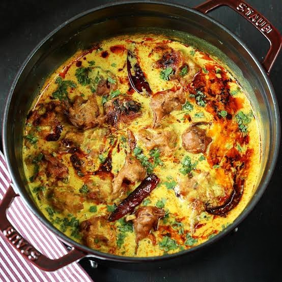

Kadhi Pakora
Veg · Tangy yogurt curry with crispy gram flour fritters
Your photo goes here
(save it as images/kadhi-pakora.jpg)
(save it as images/kadhi-pakora.jpg)

Ingredients checklist
0 of 0 ingredients ready
You have everything. Time to cook!
Instructions
- Make the pakora batter: mix 1 cup besan, the onion, ajwain, chilli powder and a pinch of salt. Add a few tablespoons of water to make a thick batter and beat it well.
- Heat oil in a pan. Drop in small spoonfuls of batter and fry on medium heat until golden and crisp. Drain on paper and set aside.
- Whisk the yogurt, 1/4 cup besan, turmeric, chilli powder, coriander powder, salt and water in a pot until completely smooth with no lumps.
- Place the pot on medium heat and stir constantly until it starts to boil. Lower the heat and simmer for 25 to 30 minutes, stirring now and then, until the kadhi thickens and the raw smell of besan goes away.
- Add most of the pakoras and simmer for 5 more minutes so they soak up the kadhi.
- For the tadka, heat the ghee in a small pan. Add the cumin, mustard seeds, fenugreek seeds, dried chillies, curry leaves, ginger and asafoetida. Let them sizzle for 30 seconds.
- Pour the tadka over the kadhi. Top with the remaining pakoras and serve hot with steamed rice.